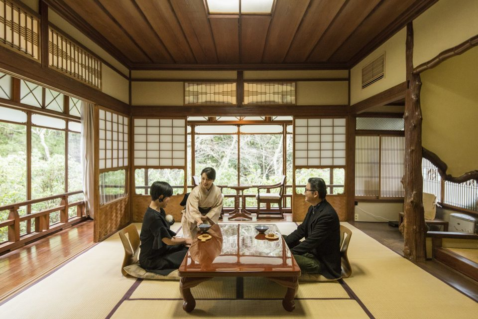
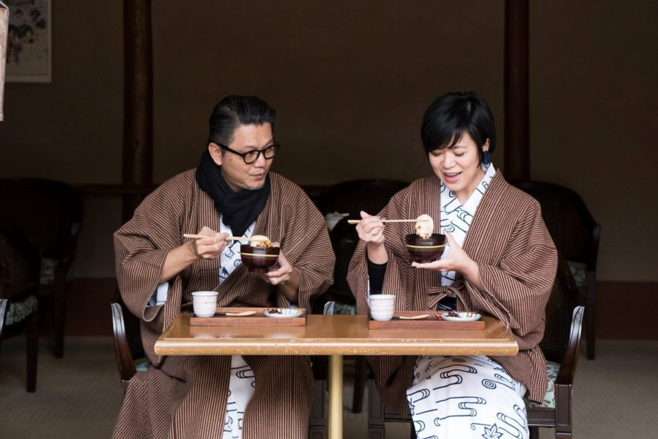
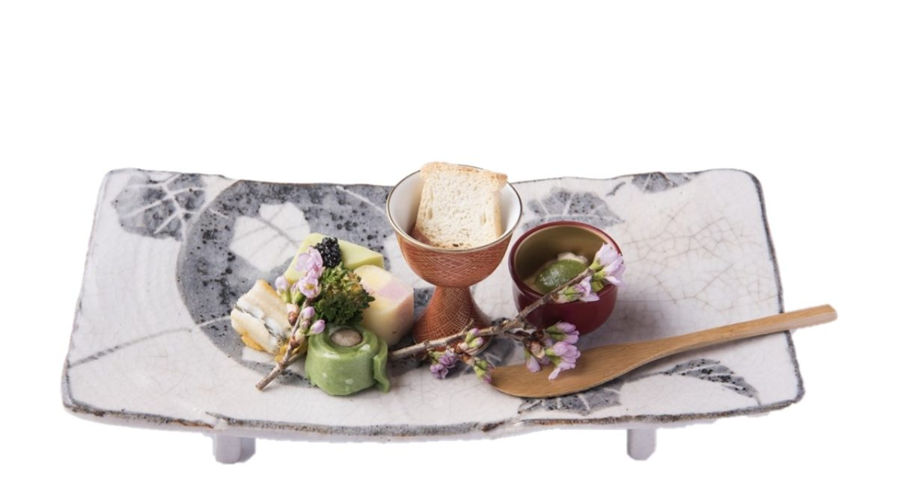
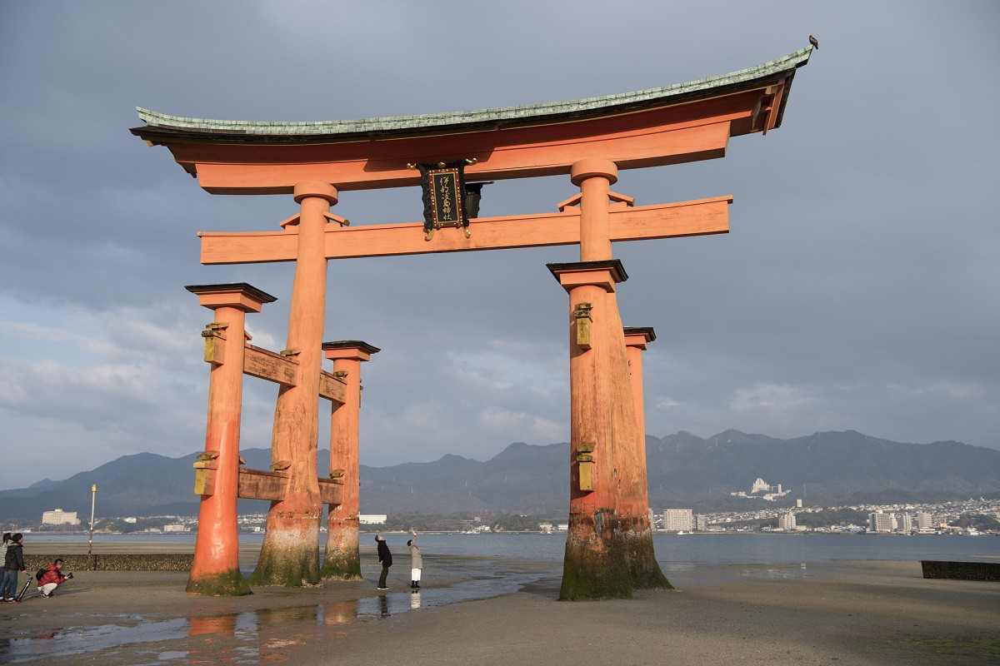
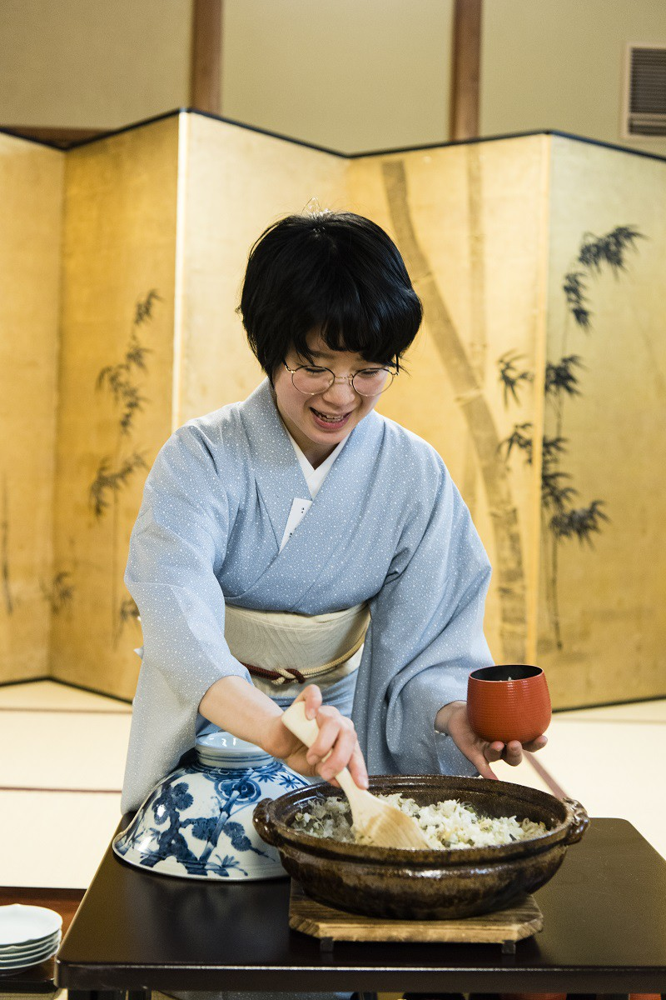
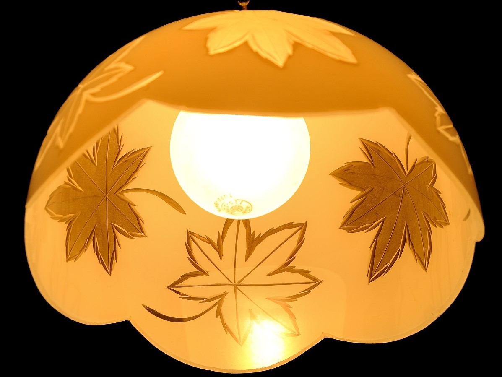

Префектура Хиросима · Миядзима · отель
Рёкан «Ивасо»: ночь на священном острове Миядзима

К «Ивасо» проходят все, кто поднимается в парк Момидзидани, но замечают его не все. Рёкан стоит у самого входа в парк с 1854 года: чайный домик для тех, кто приезжал любоваться клёнами, превратился в один из самых известных рёканов острова.
Рёкан
Чайный домик, ставший рёканом
«Ивасо» открылся в 1854 году как чайный домик при входе в парк Момидзидани, куда горожане ходили смотреть на осенние клёны. Со временем домик разросся в целый рёкан, и сегодня его не раз выбирали политики и промышленники, а также члены императорской семьи. Про гостей здесь не рассказывают по именам, но сама история гостиницы говорит за себя.
Однажды в «Ивасо» приехала супружеская пара из Тайваня, которая много лет пишет о японских гостиницах. Их поселили в отдельном доме Сюкинтэй, построенном в 1928 году: резные решётки, узорные окна и перегородки сохранены, а ванные комнаты переделаны по-современному. Гости вспоминали, что строгости в рёкане нет, а хозяйка держится спокойно и сдержанно.

Онсэн
Тёплая вода Вакамия
В рёкане есть свой онсэн под названием Вакамия-онсэн, с прозрачной водой. По составу это слабая радиоактивная холодная минеральная вода: её подогревают и нередко разбавляют. Открытая ванна выходит прямо на тропу, по которой ходят олени, и во время купания вполне можно увидеть одного из них. Купальни для мужчин и женщин открыты с 15:00 до полуночи и с 6:00 до 9:30.
Ужин
Кайсэки с устрицами и лимоном
Ужин подают в номере, и он построен как кайсэки. Начинают с сакидзукэ и хассун, где на одной тарелке соседствуют небольшие закуски из сезонных продуктов, затем идут блюда из местных устриц, лимона и говядины Хиросимы. Осенью и зимой, когда устрицы на пике, им уделяют особое место. Гости отдельно отмечали беседу с прислугой, которая провожает за столом: у неё можно расспросить про продукты и способы приготовления.

Утро
К ториям до первого парома
Утром отсюда идут к святилищу Ицукусима. Если попасть в отлив, можно дойти до самых больших торий и пройти под ними, а до первого парома на острове ещё тихо: это время доступно только тем, кто здесь ночует. Завтрак в отдельном доме подают в номере, в основном корпусе и новом крыле накрывают в столовой. Есть и японский, и западный вариант.


Деталь
Момидзи-мандзю родом из «Ивасо»
Местное лакомство момидзи-мандзю, печенье в форме кленового листа с начинкой из бобовой пасты, придумала, по преданию, хозяйка «Ивасо» около 1907 года. Подсказкой стало само название парка Момидзидани, «долина клёнов». Поэтому в убранстве гостиницы этот мотив встречается снова и снова.

Рёкан «Ивасо»
- Адрес
- префектура Хиросима, Хацукаити, Миядзима-тё, Момидзидани, 345-1
- Телефон
- +81 829-44-2233
- Часы работы
- заезд 15:00, выезд 10:00
- Номера
- 38
- Цены
- от 22 000 до 44 000 иен за человека с двумя приёмами пищи, без налога
- Ванны
- онсэн Вакамия-онсэн, купальни открыты с 15:00 до 24:00 и с 6:00 до 9:30
- Сайт
- iwaso.com
Фото: Ацуси Ямахира.